SENATORS
| Photo |
Name |
Number |
Position |
Shot |
Height |
Weight |
Birthday |
Hometown |
| 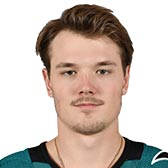 |
Rudolfs Balcers |
38 |
LW |
L |
5' 11" |
175 |
Apr 08, 1997 |
Latvia, LVA |
| 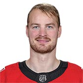 |
Mikkel Boedker |
89 |
LW |
L |
6' 0" |
210 |
Dec 16, 1989 |
Brondby, DNK |
|
Matt Duchene |
95 |
C |
L |
5' 11" |
195 |
Jan 16, 1991 |
Haliburton, ON, CAN |
|
Ryan Dzingel |
18 |
LW |
L |
6' 0" |
190 |
Mar 9, 1992 |
Wheaton, IL, USA |
|
Magnus Paajarvi |
56 |
LW |
L |
6' 3" |
206 |
Apr 12, 1991 |
Norrkoping, SWE |
|
Jean-Gabriel Pageau |
44 |
C |
R |
5' 10" |
184 |
Nov 11, 1992 |
Ottawa, ON, CAN |
| 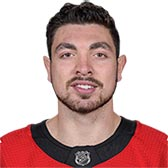 |
Nick Paul |
13 |
LW |
L |
6' 4" |
230 |
Mar 20, 1995 |
Mississauga, ON, CAN |
| 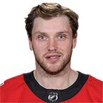 |
Bobby Ryan |
9 |
RW |
R |
6' 2" |
209 |
Mar 17, 1987 |
Cherry Hill, NJ, USA |
| 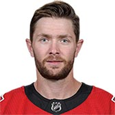 |
Zack Smith |
15 |
LW |
L |
6' 2" |
208 |
Apr 5, 1988 |
Maple Creek, SK, CAN |
 |
Mark Stone |
61 |
RW |
R |
6' 4" |
219 |
May 13, 1992 |
Winnipeg, MB, CAN |
|
Chris Tierney |
71 |
C |
L |
6' 1" |
195 |
Jul 1, 1994 |
Keswick, ON, CAN |
| 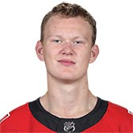 |
Brady Tkachuk |
7 |
LW |
L |
6' 3" |
196 |
Sep 16, 1999 |
Scottsdale, AZ, USA |
|
Colin White |
36 |
C |
R |
6' 0" |
183 |
Jan 30, 1997 |
Boston, MA, USA |
| Photo |
Name |
Number |
Shot |
Height |
Weight |
Birthday |
Hometown |
| 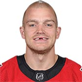 |
Mark Borowiecki |
74 |
L |
6' 1" |
207 |
Jul 12, 1989 |
Ottawa, ON, CAN |
| 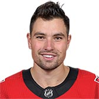 |
Cody Ceci |
5 |
R |
6' 2" |
209 |
Dec 21, 1993 |
Ottawa, ON, CAN |
| 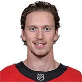 |
Thomas Chabot |
72 |
L |
6' 2" |
196 |
Jan 30, 1997 |
Sainte-Marie, QC, CAN |
| 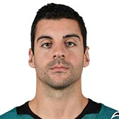 |
Dylan DeMelo |
2 |
R |
6' 1" |
195 |
May 1, 1993 |
London, ON, CAN |
| 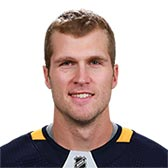 |
Justin Faulk |
42 |
L |
6' 5" |
223 |
Oct 11, 1988 |
Snowflake, MB, CAN |
| 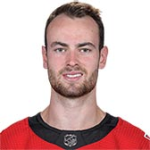 |
Ben Harpur |
67 |
L |
6' 6" |
222 |
Jan 12, 1995 |
Hamilton, ON, CAN |
| 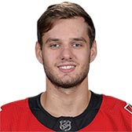 |
Christian Jaros |
83 |
R |
6' 3" |
201 |
Apr 2, 1996 |
Kosice, SVK |
| 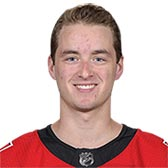 |
Maxime Lajoie |
58 |
L |
6' 1" |
183 |
Nov 5, 1997 |
Quebec City, QC, CAN |
| 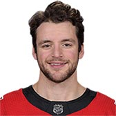 |
Christian Wolanin |
86 |
L |
6' 2" |
185 |
Mar 17, 1995 |
Quebec Citu, QC, CAN |
| Photo |
Name |
Number |
Height |
Weight |
Birthday |
Hometown |
| 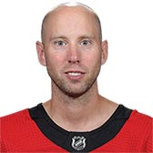 |
Craig Anderson |
41 |
6' 2" |
185 |
May 21, 1981 |
Park Ridge, IL, USA |
 |
Marcus Hogberg |
35 |
6' 5" |
209 |
Nov 25, 1994 |
Orebro, SWE |
|
Anders Nilsson |
31 |
6' 6" |
232 |
Mar 19, 1990 |
Lulea, SWE |